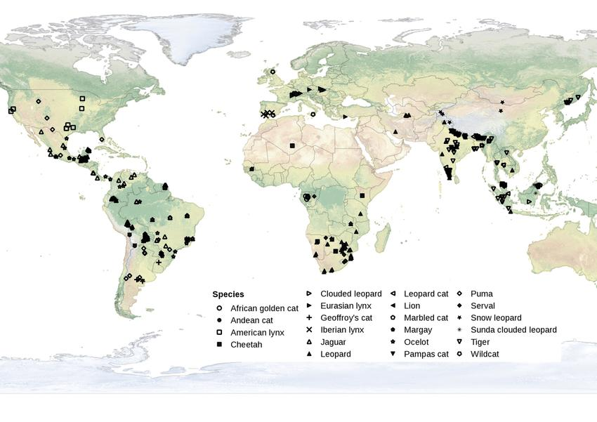
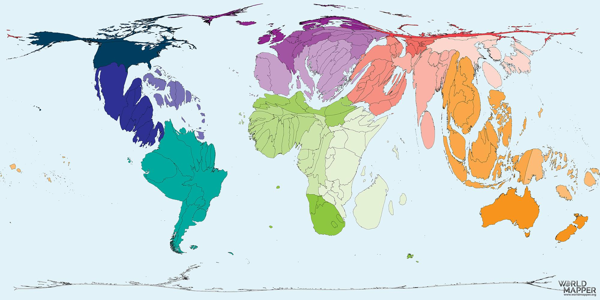

你好！我是Duo Zhang，卢森堡的一名高中生，也是这个网站的创建者。在过去的几年里，我有机会在卢森堡当地的野生动物中心"centre de soins pour la faune sauvage"做志愿者。从我的志愿者经历中，我理解了这些组织在保护野生动物和保存生物多样性方面不可或缺的作用。通过这个网站，我希望分享我对野生动物的热情，并希望您也能通过捐赠或社区服务来支持野生动物！我也注意到了欧洲和我家乡中国在动物保护方面的差异。因此，我希望与中国志愿者合作，共同扩展这个平台。我也希望这个平台能成为一座桥梁，为世界各地的动物保护志愿者提供信息。
全球猫科动物种群密度分布图
来自22种猫科动物相机陷阱研究的679条种群密度记录的世界地图。仅显示使用CR FMMDM、CR HMMDM和SECR密度估算方法的记录。
来源：来自全球相机陷阱研究的猫科动物种群密度空间方差-质量异速生长
濒危动物物种的地图，东南亚和南美洲的濒危动物物种数量最多。来自World Mapper的图表。
保护状况
"迄今为止，许多物种群体包括哺乳动物、两栖动物、鸟类、造礁珊瑚和针叶树已经得到了全面评估。除了评估新识别的物种外，IUCN红色名录还重新评估了一些现有物种的状况，有时会有好消息要讲。例如，由于保护努力，IUCN红色名录类别上的许多物种都有降级（即改善）的好消息。然而，坏消息是生物多样性正在下降。目前IUCN红色名录上有超过105,700个物种，其中超过28,000个物种面临灭绝威胁，包括40%的两栖动物、34%的针叶树、33%的造礁珊瑚、25%的哺乳动物和14%的鸟类。" – 国际自然保护联盟（IUCN）
"IUCN状况 – 全球动物、真菌和植物物种灭绝风险状况的最全面信息来源。"
国际自然保护联盟（IUCN）濒危物种红色名录成立于1964年，是世界生物多样性健康状况的关键指标。它是告知和促进生物多样性保护和政策变化的有力工具，对保护我们生存所需的自然资源至关重要。它提供了有关种群规模、栖息地和生态、使用和/或贸易、威胁和保护行动的信息，这些信息将有助于告知必要的保护决策。IUCN红色名录被各种机构使用，如政府机构、野生动物部门、教育组织和商业界。
"红色名录过程已成为一项涉及IUCN生物多样性评估和知识团队工作人员、合作伙伴组织以及IUCN物种生存委员会和合作伙伴网络中的专家的庞大企业，他们编译物种信息，使IUCN红色名录成为今天不可或缺的产品。" – IUCN
https://www.iucnredlist.org/
人类互动：影响野生动物的生态问题
来源：IFAW

1. 森林砍伐：Deforestation
清除或稀疏森林，使土地适合农业、畜牧业或城市化等用途。森林砍伐是威胁生物多样性的主要生态问题，导致许多野生动物栖息地的缩小和消失。受威胁的物种是澳大利亚的考拉种群。由于它们的饮食完全由桉树叶组成，它们特别容易受到森林砍伐的影响。当树木被砍伐时，考拉失去了主要的食物来源，导致考拉种群大幅减少，该物种现在被IUCN红色名录归类为易危。
2. 栖息地破碎化：Habitat Fragmentation
将野生动物栖息地分割成小块。当较大栖息地的区域被自然原因或人类活动破坏时，就会发生这种情况，这阻碍了野生动物在土地区域之间安全移动，破坏了季节性觅食模式和迁徙。由于空间较小且与较大种群分离，物种面临更强的竞争并面临近亲繁殖，这可能会耗尽它们的种群并影响生物多样性。许多物种，如非洲稀树草原大象和黑犀牛，目前正受到与栖息地破碎化相关的生态问题的影响。
3. 偷猎：Poaching
非法捕猎或活体捕获您不拥有或受法律保护的任何野生动物。大多数时候，偷猎已成为由经济利益驱动的复杂和大规模操作。出售外来动物及其部位的利润继续推动着今天的偷猎活动。面临大规模偷猎的一些动物包括羚羊、大象和犀牛。偷猎特别复杂，因为在某些地区，人们可能依赖偷猎作为收入、食物和传统药物的来源。提出的解决方案是积极支持偷猎者的替代生计，使他们能够找到更多对野生动物友好的收入来源。还可以更多地支持护林员，他们工作在防止野生动物犯罪的第一线。
4. 副渔获
在商业捕鱼过程中意外捕获的海洋生物。鱼类、海龟、海豚、鲨鱼……几乎所有海洋动物都受到影响。作为影响海洋生物的最具破坏性的生态问题之一，副渔获导致在将野生动物拖到水面或试图逃脱它们被困在其中的渔具的过程中，被捕获的动物严重受伤或死亡。一些因力竭而死亡，而需要浮出水面的海洋动物经常溺水。
5. 过度捕捞：Overfishing
当在特定种群中捕获了过多的鱼类，而没有足够的繁殖成年个体来补充种群时。尽管联合国粮食及农业组织监测着超过500个全球鱼类种群，但据估计仍有三分之一的鱼类被过度捕捞，这是由更高水平的消费和非法捕捞造成的。过度捕捞影响生物多样性，因为鱼类种群减少破坏了食物网，破坏了栖息地，并减少了在这些脆弱生态系统中维持平衡的海洋生物种群。鲨鱼经常被过度捕捞并因鳍而被杀死，将一些鲨鱼物种推向灭绝。
6. 污染
当有害物质（称为污染物）被释放到环境中时。一些污染物如火山灰是自然的，但人类要对大多数污染负责，这些污染损害土地、水和空气。汽车尾气和烟雾污染空气，塑料和其他丢弃的垃圾污染水，污水、工业废物和农药污染土地和水道。噪音污染也是影响像鲸鱼这样的海洋动物的主要污染类型。所有野生动物都受到空气和水污染的破坏性生态问题的威胁。空气污染改变了迁徙动物的行为模式，而水体中的塑料和化学污染物在野生动物动物中造成广泛问题。
7. 干旱
降水缺乏的长时间干燥天气，最终导致水资源短缺。这个生态问题影响栖息地、农业、能源和环境。由于全球变暖导致气温上升，地球上较干燥的地区变得更干燥，增加了干旱的风险和严重性。干旱可以减少陆生动物的水和食物来源，破坏当地食物网并使生态系统失去平衡。在干旱期间，由于草和树木的可燃性增加，野火更为常见。在非洲之角地区，持续的干旱严重影响了当地人民和那里的野生动物。自2020年以来，该地区经历了极其干燥的雨季，仅截至2023年2月，Amboseli生态系统就损失了6,093只野生动物。家畜也受到影响，导致许多农民失去生计。
8. 石油和天然气开发
石油和天然气向大气中释放温室气体并污染空气。工业发展可能由于排放和灰尘导致空气质量降低，泄漏和溢出破坏生态系统，以及植被损失和土壤损害。此外，石油泄漏永久破坏海洋生态系统，可能伤害数万只动物。2023年12月，印度的一次石油泄漏影响了多达200只鹈鹈。
9. 土壤侵蚀：Soil Erosion
土壤的顶层随时间推移而被磨损和转移，改变了土地的形状。这可能是一个自然过程（水和风），但也可能由人类活动引起。世界上多达三分之一的土壤显示出中度到高度的退化。土壤侵蚀降低了土壤肥力，这可能会减少植被的健康和生物多样性。此外，植物较少意味着吸收二氧化碳和防止全球变暖影响的物种较少。据估计，健康的土壤可以吸收人类产生的所有温室气体排放的5%。
10. 土壤退化
土壤的质量及其支持植物和动物的潜力降低。它包括影响土壤生态系统和其中野生动物的化学、物理或生物变化。与土壤侵蚀类似，土壤退化可能是自然过程的结果，但也可能通过土地清理和集约化农业等人类活动而加速。土壤退化通过增加荒漠化和山体滑坡影响野生动物，这可能破坏栖息地。
动物权利发展的详细时间线：Detailed Timeline on Development of Animal Rights
来源：维基百科并使用各种资源进行事实核查：Source: Wikipedia and fact-checked using various resources
遇到野生动物时该怎么做：What to Do When Encountering Wild Animals
来源：国家地理
美洲狮
如果动物没有注意到你，悄悄地走开，但如果它已经注意到了，不要逃跑。试着通过慢慢举起双臂或打开夹克盖在头上让自己看起来很大。面对美洲狮并具有攻击性——向美洲狮迈两步，或者甚至向动物冲过去，这是让它们逃跑的最佳方式。保持眼睛盯着动物，不要移开视线。如果美洲狮靠近，这些策略都不起作用，向它扔岩石或水瓶等物体。
预防：注意美洲狮的迹象，包括小径上的爪痕和粪便。还要选择远离岩石突出物、悬崖或茂密灌木丛的营地，因为美洲狮更有可能出现在这些地方。
熊：Bear
待在原地或慢慢向侧面移动。不要跑或尖叫。不要爬树，因为熊也能爬。相反，让自己看起来像难以对付的大猎物：慢慢挥动手臂让自己看起来很大，并尽量保持冷静。大声说话，既可以让自己平静下来，也可以向熊表明你是一个人类。
如果被灰熊攻击，装死，腹部朝下躺下（因为它更容易被撕裂开）并留下背包以更好地保护自己。对于较小的黑熊，不要装死。相反，试着逃跑或反击，将你的打击集中在动物的脸上和口鼻上。
更好的预防：在熊地区制造大量噪音，以防止动物受惊，并避免浆果灌木等食物来源。将食物和垃圾安全存放，并结伴旅行。对于熊和所有动物，永远不要将自己置于母亲和幼崽之间。
短吻鳄：Alligator
避免让你的狗和拴绳宠物在过去看到过短吻鳄的水域游泳。将它们关在有围栏的区域或房子里几天，因为爬行动物有很好的嗅觉。
如果被攻击，最好的防御是戳短吻鳄的眼睛并击打它的头部。用这些打击，试着让动物窒息并释放你。当动物张开嘴重新定位时，利用这个时刻逃跑。尽可能快地直线跑开。速度至关重要，因为短吻鳄在陆地上可以以每小时35英里的速度奔跑。
更好的预防：避免在短吻鳄最活跃的夜间游泳，永远不要试图喂食动物或在张贴警告的水域游泳。
野牛
这些动物可以以每小时超过30英里的速度移动，跳过高围栏，并游泳。如果可能，留在你的车里，不要向动物走去以更近距离地观察。如果它似乎已经注意到你，慢慢后退。
更好的预防：至少保持25码的距离，最好留在车里。
如果被攻击：跑。
郊狼
制造会向动物发出你的存在信号的声音，如果一只仍然靠近，试着让自己看起来很大并挥动手臂。
如果郊狼咬人，它可能需要从野外移除并检测狂犬病，所以立即向当地当局报告任何攻击。
更好的预防：永远不要喂食郊狼。晚上将宠物关在里面，并安全地存放所有垃圾和食物。运动激活的灯和电围栏被用于保护牲畜，也是郊狼遭遇的关键威慑物。
狮子和猎豹
如果你在狮子休息时遇到它，后退。通常，休息的狮子会保持休息，只要你没有引起它的兴趣。你在徒步时不太可能遇到猎豹，因为这些动物通常避免人类。好奇的猎豹或狮子可能会靠近野生动物园车辆闻、咀嚼它的部分，甚至爬上去。始终保持所有肢体在车内，启动车辆，并小心地远离任何看起来想要互动或在你之前爬上车辆的动物。
好奇的猎豹可能会伸出手触摸人或他们的相机，但重要的是不要反应并保持静止，直到动物失去兴趣。如果你遇到狮子，保持冷静，避免眼神接触，不要试图逃跑或触摸动物。如果你处于可以小心并慢慢向狮子安全移动的位置而不将背对着它的位置，那么这样做可能是值得的。否则，保持不动，尽量减少所有动作，并等待。
猎豹攻击极其罕见。如果狮子决定攻击你，让自己尽可能大，站在原地甚至有目的地向狮子移动，同时大喊并制造大量噪音。不要转身或逃跑。
更好的预防：不要试图接近这些动物并留在你的车里。
驼鹿
驼鹿遇到时该怎么做
更好的预防：至少保持25码的距离，最好留在车里。
如果被攻击：跑。
国际野生动物组织：支持它们！：International Wildlife Organizations：Support Them!
国际动物福利基金会：International Fund for Animal Welfare (IFAW)：International Fund for Animal Welfare (IFAW)
在全球范围内救援动物，在灾难中提供帮助，打击非法野生动物贸易：rescues animals worldwide, helps in disasters, combats illegal wildlife trade：rescues animals worldwide, helps in disasters, combats illegal wildlife trade
https://www.ifaw.org/international/support
世界动物保护
在150多个国家开展工作，以减少痛苦、改善政策，并在灾害和农业中保护动物
https://www.worldanimalprotection.org/support-us/
世界野生动物基金会（WWF）：World Wildlife Fund (WWF)
在全球范围内保护濒危物种和栖息地：protects endangered species and habitats globally
https://www.worldwildlife.org/support/give/
动物慈善评估员（ACE）
评估并推荐高影响力的动物福利慈善机构
https://animalcharityevaluators.org/help-animals-now/
也请支持当地非政府组织（NGO），并承认它们为保护当地野生动物种群所做的工作！